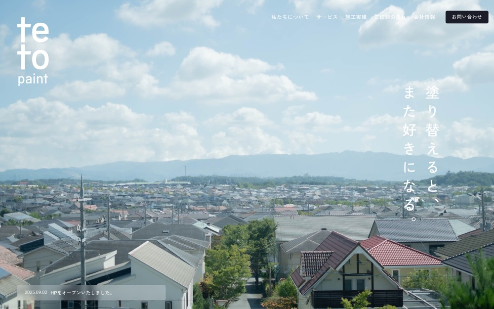

tetopaint
白地に #61636a を大きな面で置く配色。影も枠線もほとんど使わない。本文 16px・行間 2.3、セクション間 52px。
配色
文字色は #1b1e29 / #ffffff / #a4a5a9 / #61636a。
どこに使っているか（箇所数）
| 色 | 面 | 文字 | 枠線 | ボタンの地 |
|---|---|---|---|---|
#ffffff |
20 | 42 | 3 | 2 |
#61636a |
1 | 5 | 0 | 0 |
#1b1e29 |
15 | 107 | 11 | 8 |
#f2f2f2 |
5 | 0 | 0 | 0 |
#e8e8ea |
3 | 0 | 5 | 0 |
#a4a5a9 |
0 | 38 | 0 | 0 |
#61636a は文字色として5箇所で使うのが主。面としては1箇所しかないが、1枚が大きく画面の8%を占める。ボタンの地には使っていない。
文字
和文
Zen Kaku Gothic New欧文
Roboto本文
16px / 行間 2.3この見本は Noto Sans JP で表示していますあのイーハトーヴォのすきとおった風
あのイーハトーヴォのすきとおった風
あのイーハトーヴォのすきとおった風
あのイーハトーヴォのすきとおった風
あのイーハトーヴォのすきとおった風
あのイーハトーヴォのすきとおった風
あのイーハトーヴォのすきとおった風
余白とかたち
| コンテンツ幅 | 1360px | |
|---|---|---|
| 読ませる段の幅 | 700px | |
| セクションの上下余白 | 52px | |
| 並びの間隔 | 10 / 15 / 20 / 22px | |
| 角丸 | 5px（大きな面は 0px） | |
| 影 | なし | |
| 画面幅の切り替え | 1280 / 1025 / 768 / 576 / 414px |
ボタン
お問い合わせ
#1b1e29 / 16px / 500 / 角丸 5px
もっと見る
transparent / 18px / 500 / 角丸 0px
もっと見る
transparent / 16px / 500 / 角丸 0px
ページの組み立て
上から順に、実際に並んでいたセクション。高さの比率もそのまま。
1
ヒーロー（画像）
900px
2
1カラム・画像あり
1180px
3
4カラム・画像あり
3360px
4
3カラム・画像あり
1120px
5
4カラム・画像あり
920px ・ #61636a
6
3カラム・画像あり
500px
7
5カラム・画像あり
780px
全7セクション、すべて全幅。
面と、その上に置く線・文字
| 面 | 使用箇所 | 線と文字 |
|---|---|---|
#ffffff |
9 | #61636a |
#f2f2f2 |
5 | #61636a |
#1b1e29 |
3 | #ffffff |
#61636a |
1 | #ffffff |
線と文字の色は固定ではなく、乗っている面で入れ替える。
部品
同じ形が 5 箇所。角丸 5px ／ 影なし
角丸は 5px だが、完全な円は別扱いで 15 箇所（40px×8、32px×7）。角を丸めないことと、円のモチーフは両立する。
PCとスマホ
同じサイトを390px幅で測り直した値。
| PC 1440px | スマホ 390px | |
| 本文 | 16px / 行間 2.3 | 15px / 行間 2.2 |
| 見出し | 75px | 51px |
| セクションの上下余白 | 52px | 60px |
| 左右の余白 | — | 20px |
| 並びの間隔 | 20px | 10px |
文字サイズの段は 27 / 16 / 15 / 14 / 12px。セクション余白はPCの115%まで詰める。
画像
4:3・8枚
3:2・7枚
1:1・6枚
31枚。うち 3 枚は画面いっぱいに置く。角丸 0px。